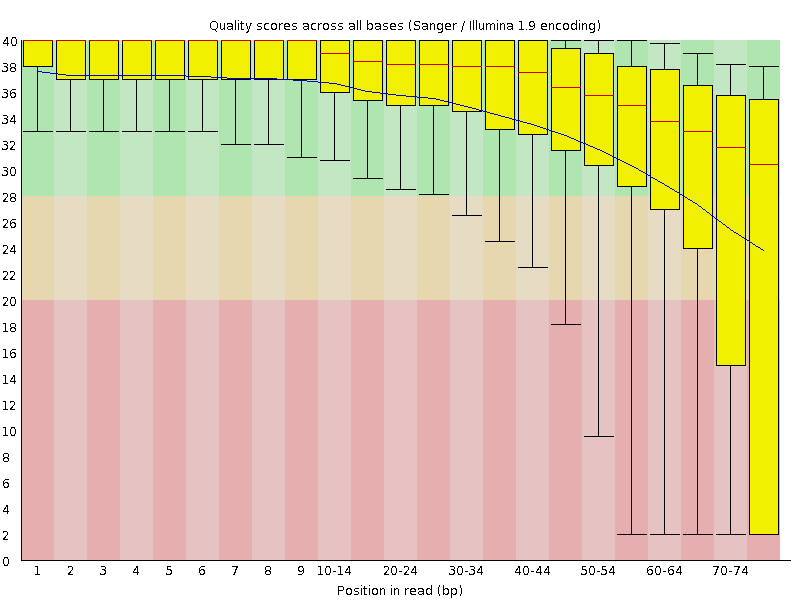
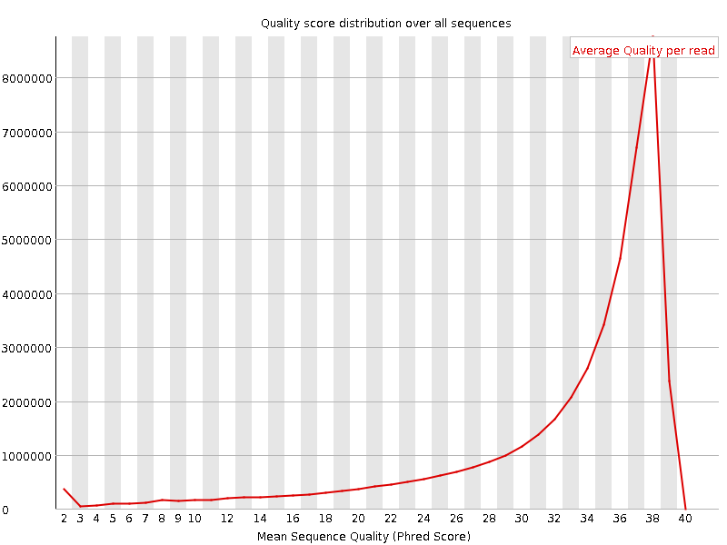
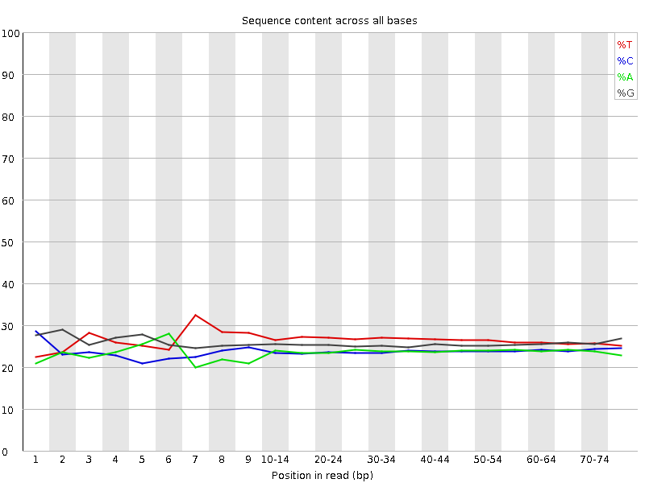
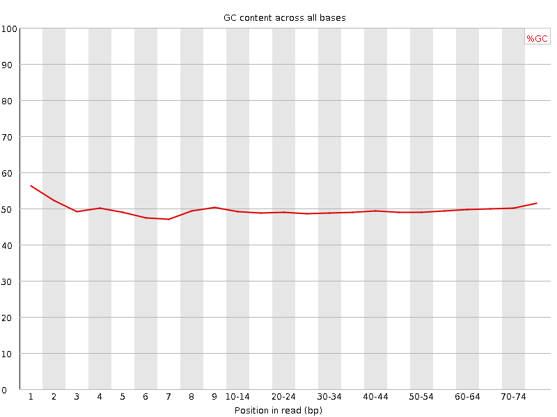
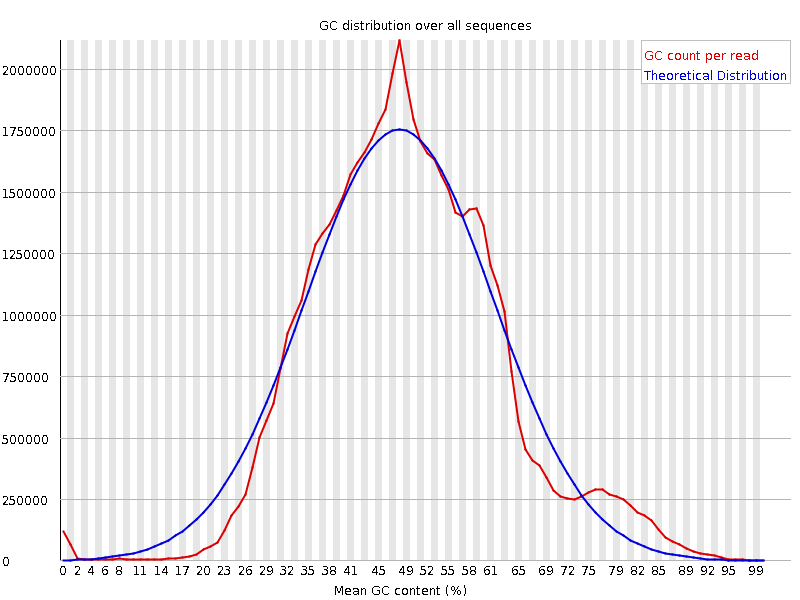
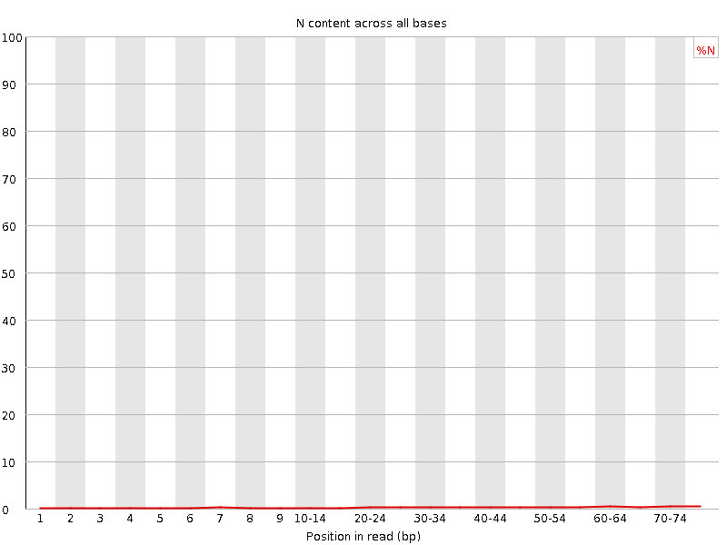
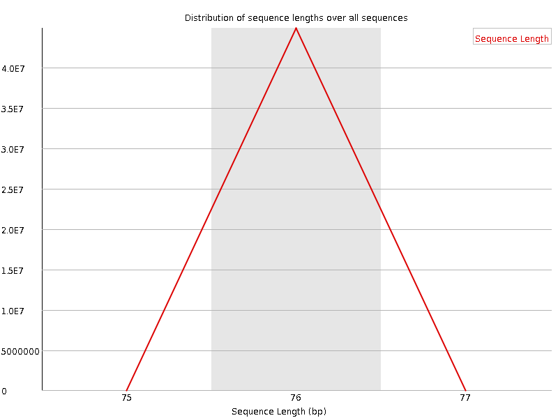
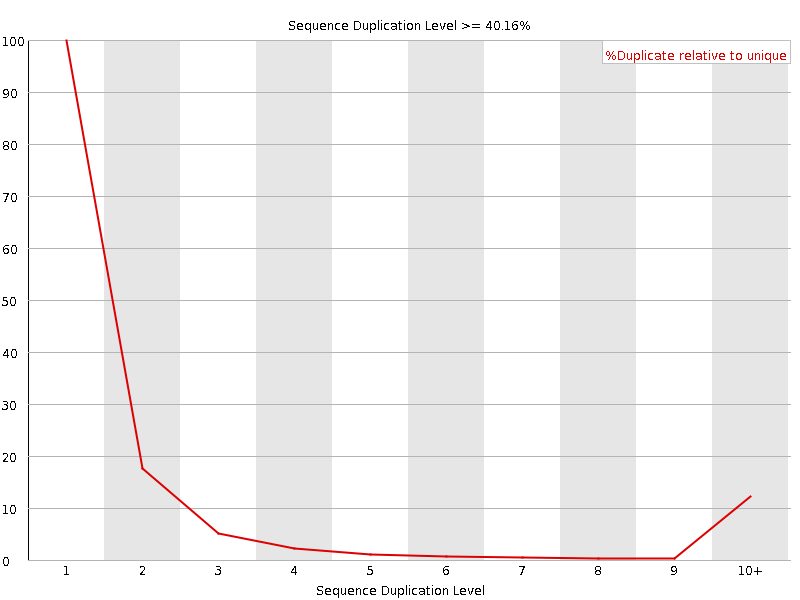
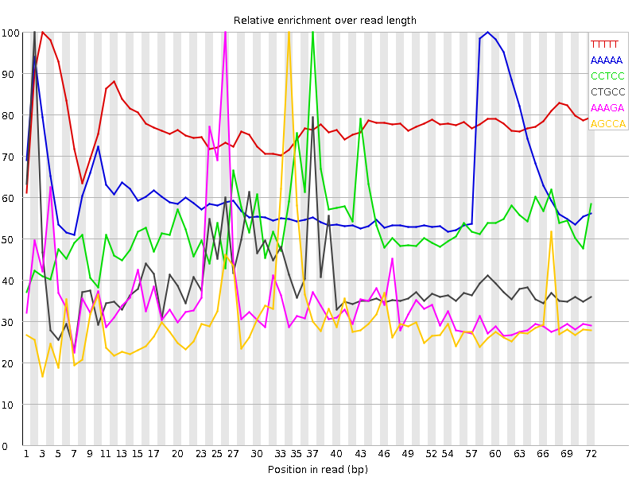

![[OK]](Icons/tick.png) Basic Statistics
Basic Statistics
| Measure | Value |
|---|---|
| Filename | SRR315305_2.fastq |
| File type | Conventional base calls |
| Encoding | Sanger / Illumina 1.9 |
| Total Sequences | 44873239 |
| Filtered Sequences | 0 |
| Sequence length | 76 |
| %GC | 49 |
![[FAIL]](Icons/error.png) Per base sequence quality
Per base sequence quality

Per sequence quality scores

Per base sequence content

![[WARN]](Icons/warning.png) Per base GC content
Per base GC content

Per sequence GC content

Per base N content

Sequence Length Distribution

Sequence Duplication Levels

Overrepresented sequences
| Sequence | Count | Percentage | Possible Source |
|---|---|---|---|
| CCTGCCAGTAGCATATGCTTGTCTCAAAGATTAAGCCATGCATGTCTAAG | 134208 | 0.2990824887857995 | No Hit |
| GGCCTGTATCCTAGGCTACACACTGAGGACTCTGTTCCTCCCCTTTCCGC | 84399 | 0.18808314683947822 | No Hit |
| CTGCCAGTAGCATATGCTTGTCTCAAAGATTAAGCCATGCATGTCTAAGT | 74238 | 0.16543936130841813 | No Hit |
| CGAAGGCCCGCGGCGGGTGTTGACGCGATGTGATTTCTGCCCAGTGCTCT | 60162 | 0.13407099942128092 | No Hit |
| GCTGAAGGCCTGTATCCTAGGCTACACACTGAGGACTCTGTTCCTCCCCT | 52959 | 0.11801911602592359 | No Hit |
| GCGAATGATTAGAGGTCTTGGGGCCGAAACGATCTCAACCTATTCTCAAA | 52250 | 0.11643910973308613 | No Hit |
| GATCGGAAGAGCGTCGTGTAGGGAAAGAGTGTAGATCTCGGTGGTCGCCG | 51083 | 0.11383845057407155 | Illumina Single End PCR Primer 1 (100% over 50bp) |
| TGGTAATCCTGCTCAGTACGAGAGGAACCGCAGGTTCAGACATTTGGTGT | 50241 | 0.11196205382009532 | No Hit |
| GGCGGGTGTTGACGCGATGTGATTTCTGCCCAGTGCTCTGAATGTCAAAG | 50100 | 0.11164783536129408 | No Hit |
| CGGGTGTTGACGCGATGTGATTTCTGCCCAGTGCTCTGAATGTCAAAGTG | 46966 | 0.1046637172770167 | No Hit |
| CCGAAAGATGGTGAACTATGCCTGGGCAGGGCGAAGCCAGAGGAAACTCT | 45980 | 0.10246641656511579 | No Hit |
Kmer Content

| Sequence | Count | Obs/Exp Overall | Obs/Exp Max | Max Obs/Exp Position |
|---|---|---|---|---|
| TTTTT | 15032835 | 3.5109975 | 4.5231104 | 3 |
| AAAAA | 8392430 | 3.3531618 | 5.4823766 | 59 |
| CCTCC | 7397660 | 2.6609433 | 5.0228195 | 37 |
| CTGCC | 6021220 | 2.018207 | 5.016415 | 2 |
| AAAGA | 5168365 | 1.9253621 | 5.4947066 | 26 |
| AGCCA | 4964850 | 1.8516988 | 6.1126904 | 34 |
| CAAAG | 4848830 | 1.8073766 | 5.1451926 | 25 |
| TCAAA | 4830365 | 1.7344581 | 5.1618037 | 24 |
| AAAGT | 5146245 | 1.7219251 | 5.308076 | 58 |
| CCTGC | 5059335 | 1.6958002 | 5.000017 | 1 |
| CCATG | 4652655 | 1.5585816 | 5.042229 | 36 |
| AAGCC | 3764320 | 1.4039471 | 5.606604 | 33 |
| ATGTC | 3727665 | 1.1209282 | 5.039346 | 42 |